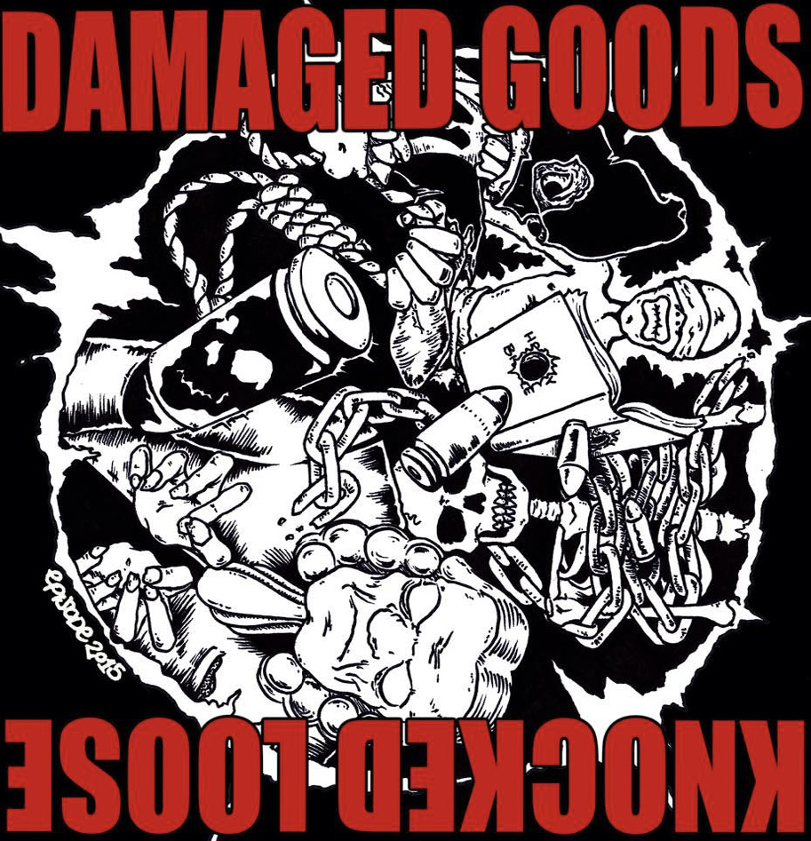

Knocked Loose’s initial demos include “The Have Nots” and “Manipulator,” the latter of which being the band’s initial name before settling on Knocked Loose.
The next year, after signing to Little Heart Records, they released their first studio single “SS.”
Following the release of their 2014 EP Pop Culture, Knocked Loose contributed three new songs — “Damned Earth,” “D.T.A.H.,” and “Burnt Toast,” — to a split EP with Damaged Goods.
